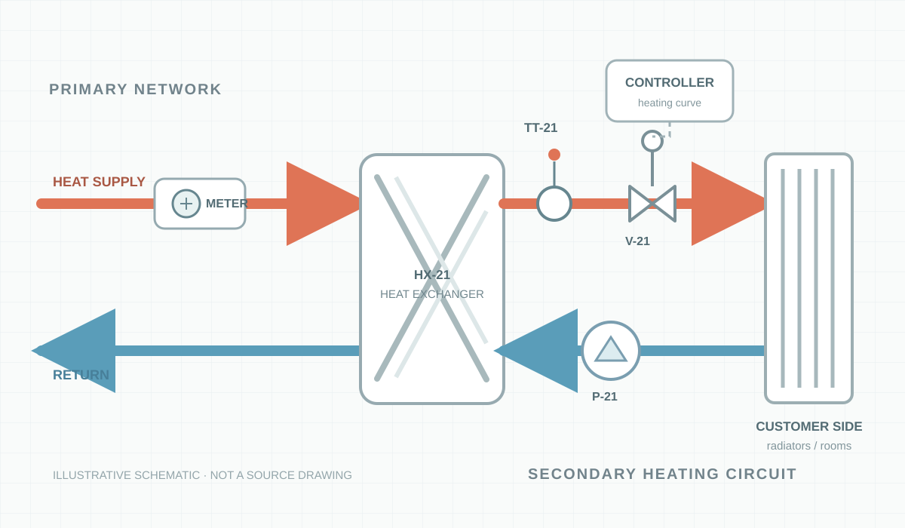

ILLUSTRATIVE SCHEMATIC
원본 P&ID 아님 · 수동 bbox
열이 어디까지 전달됐는가?
근거 행을 선택하면 해당 지점의 bbox와 출처가 연결됩니다.

bbox 좌표: 이 SVG의 정규화된 0–1 좌표
선택 위치는 진단 결과가 아닌 근거 탐색 지점입니다.
OBSERVED TREND
144개 공개 계측 · 신고 전 24시간
2차측 난방 공급온도
실측설정값